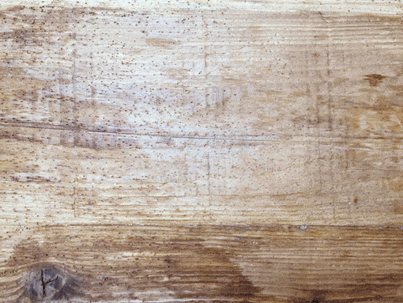
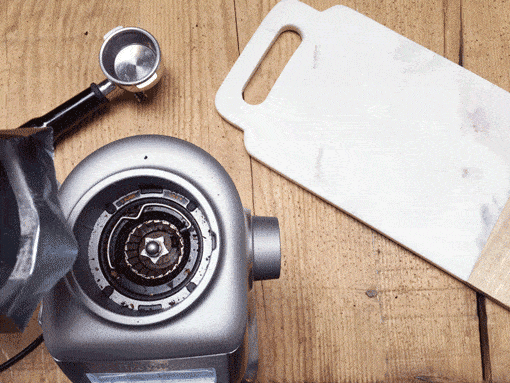
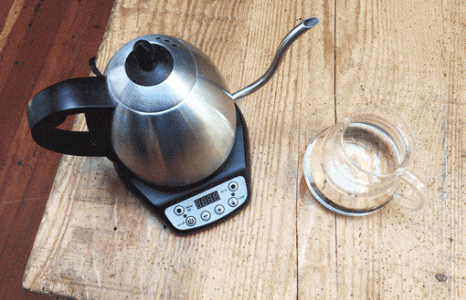
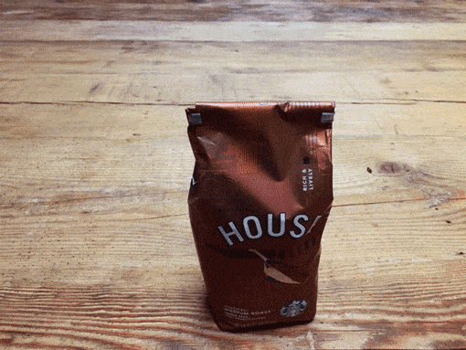

咖啡调制
咖啡器并不是调制美味咖啡的唯一因素。咖啡调制的四要素分别是比例、研磨度、水、新鲜度。
如果您具有调制咖啡的基本常识，您就可以利用咖啡压滤壶、家用咖啡壶和浓缩意式咖啡器来调制美味咖啡。
比例

要掌握好咖啡粉和水的比例——这是调制美味咖啡过程中关键的步骤。为了让您调制出效果上佳的咖啡，我们建议您用180毫升水与10克咖啡粉进行搭配。如果您觉得用这种方式调制出来的咖啡饮品的味道太浓，您可以再往里加点热水。
10克咖啡需用180毫升水调制。 两勺约为10克。
研磨度

不同的调制方式对咖啡研磨的程度有不同的要求。但总的来说，调制的时间越短，对咖啡研磨的程度就越高。例如，用在浓缩咖啡机上的咖啡粉必须非常精细，因为调制的时间只有18到23秒左右。但是，用在咖啡压壶上的咖啡粉可以粗糙一些，因为水和咖啡粉有四分钟直接接触的机会。
- 浓缩咖啡机：特别细的咖啡粉
- 滴滤咖啡机：中等粗细的咖啡粉
- 咖啡压滤壶：粗的咖啡粉
调制的时间越短，对咖啡研磨的程度就越高。
水

一杯咖啡中，98%的成分都是水，所以您用来调制咖啡的水必须清洁、新鲜、不含杂质。最好将水加热到90摄氏度到96摄氏度，这种温度的热水可以萃取咖啡所有的风味。温度不够的水不可用。
水越纯净，越能制作出一杯好咖啡。
新鲜度

咖啡是一种讲究新鲜度的饮品，它的敌人是氧、光、热和潮湿。为了保证咖啡的新鲜度，应在室温下将咖啡放置于避光、密封的容器里保存。您可以用这种方式保存咖啡达一个星期之久。为了获得更好的效果，磨好的咖啡粉应该立即使用。
新鲜的咖啡的保存时间不能超过一个星期。
相关文章